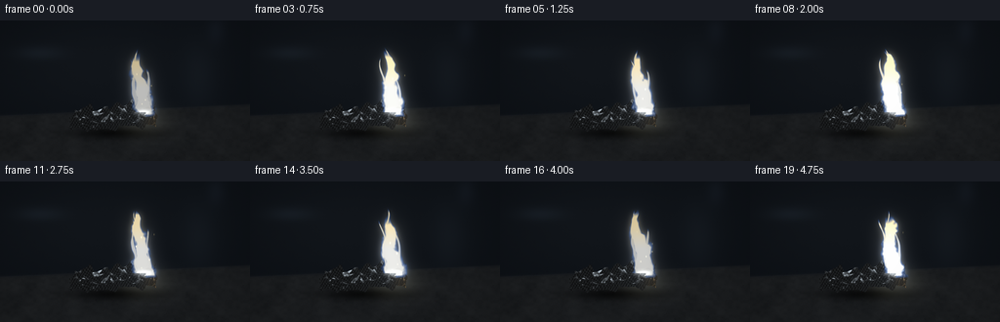
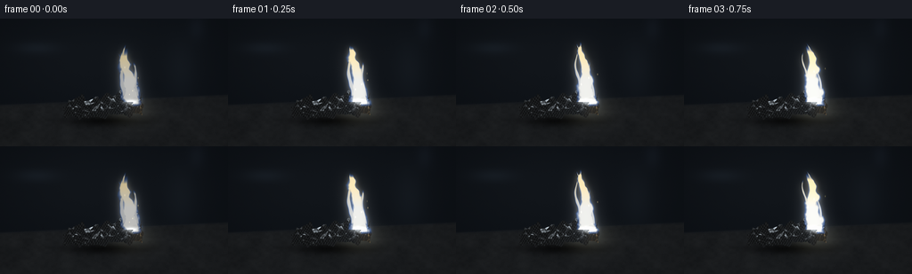
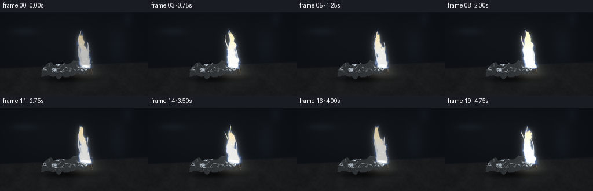
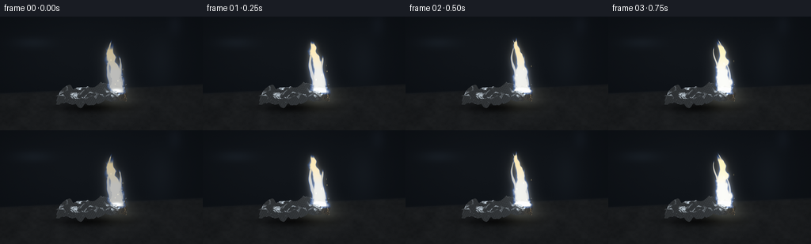
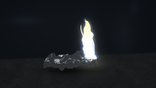

CODING AGENTS AS PIXEL WORLD MODELS
traex/GPT-6.1-Sol · material_0011
点击播放 · 原生 RGB 像素
逐轮保存的候选
回放视频、检查图与代码变化。
每份候选均可单独播放。实际图片检查记录在下方工具轨迹中。
候选 01播放与检查图
点击播放 · 原生 RGB 像素


展开代码变化
--- 上一保存版本
+++ 本次保存版本
@@ -0,0 +1,188 @@
+from pathlib import Path
+import numpy as np
+from PIL import Image, ImageDraw, ImageFilter
+import artifact_io
+
+ROOT = Path(__file__).resolve().parent
+W,H,S=256,144,3
+WW,HH=W*S,H*S
+rng=np.random.default_rng(4112)
+yy,xx=np.mgrid[0:HH,0:WW].astype(float)/S
+
+# Continuous, reproducible noise, sampled in a moving volume.
+noise_rng=np.random.default_rng(374)
+noise_grids=[noise_rng.random((40,96,96)).astype(np.float32) for _ in range(4)]
+def noise(x,y,t,octave=0):
+ g=noise_grids[octave]
+ x=np.asarray(x);y=np.asarray(y)
+ xi=np.floor(x).astype(int); yi=np.floor(y).astype(int);ti=int(np.floor(t))
+ u=x-xi;v=y-yi;w=t-ti
+ u=u*u*(3-2*u);v=v*v*(3-2*v);w=w*w*(3-2*w)
+ def layer(k):
+ a=g[k%40,yi%96,xi%96];b=g[k%40,yi%96,(xi+1)%96]
+ c=g[k%40,(yi+1)%96,xi%96];d=g[k%40,(yi+1)%96,(xi+1)%96]
+ return (a*(1-u)+b*u)*(1-v)+(c*(1-u)+d*u)*v
+ return layer(ti)*(1-w)+layer(ti+1)*w
+
+def blur(a,r):
+ # Floating point bloom through independently blurred RGB components.
+ return np.stack([np.asarray(Image.fromarray(np.uint8(np.clip(a[...,i],0,255))).filter(ImageFilter.GaussianBlur(r*S))).astype(float) for i in range(3)],-1)
+
+# A dark, rough refractory tile, in a shallow-focus workshop.
+grain=rng.normal(0,1.2,(HH,WW))
+bg=np.empty((HH,WW,3),float)
+for c,base in enumerate([13,17,22]):
+ bg[...,c]=base+5*np.exp(-((xx-100)/120)**2-((yy-44)/50)**2)+grain*.35
+# Discreet out-of-focus reflected light in the distant room.
+for cx,cy,rx,ry,col in [(41,33,24,7,[7,9,11]),(204,57,18,37,[5,6,7]),(221,10,9,14,[5,6,8])]:
+ q=np.exp(-((xx-cx)/rx)**2-((yy-cy)/ry)**2)
+ bg+=q[...,None]*np.array(col)
+stone=np.array([27,29,31.])[None,None,:]+grain[...,None]*.7
+tex=(noise(xx/4,yy/3,0)-.5)*4+(noise(xx/15,yy/12,9,1)-.5)*6
+stone+=tex[...,None]
+# Slab's back edge is below the optical focus.
+mask=1/(1+np.exp(-(yy-(92-.045*(xx-128)))/.7))
+bg=bg*(1-mask[...,None])+stone*mask[...,None]
+edge=np.exp(-((yy-(92-.045*(xx-128)))/.5)**2)
+bg+=edge[...,None]*3
+shadow=np.exp(-((xx-120)/44)**2-((yy-115)/6)**2)*.70
+bg*=1-shadow[...,None]
+# Fine aggregate inclusions in stone, softened with distance from focal plane.
+for _ in range(1300):
+ x=rng.uniform(0,256);y=rng.uniform(92,144);r=rng.uniform(.1,.45)
+ spot=np.exp(-((xx-x)**2+(yy-y)**2)/(r*r+.05))
+ bg-=spot[...,None]*rng.uniform(1,4)
+
+# A thin crumpled aluminum sheet. Crease and curl geometry stays fixed during combustion.
+nu,nv=80,34
+u,v=np.meshgrid(np.linspace(-1,1,nu),np.linspace(-1,1,nv))
+x=u*1.03+.023*np.sin(v*13+u*5)
+y=v*.36*(.84+.13*np.cos(u*3))+.05*np.sin(u*6)
+tri=lambda a: (2/np.pi)*np.arcsin(np.sin(a))
+z=.09+.07*tri(u*19+v*6)+.035*tri(u*32-v*13)+.05*np.sin(u*8+v*6)
+z+=.22*np.abs(v)**2+.075*(u+1)+.05*np.sin(v*7-u*11)
+x+=.033*np.sin(u*16+v*18);y+=.028*np.sin(v*16+u*9)
+verts=np.stack([x,y,z],-1).reshape(-1,3)
+faces=[]
+for j in range(nv-1):
+ for i in range(nu-1):
+ a=j*nu+i;b=a+1;c=a+nu;d=c+1
+ faces.extend([[a,b,c],[b,d,c]] if (j+i)%2 else [[a,b,d],[a,d,c]])
+faces=np.array(faces)
+face_n=np.cross(verts[faces[:,1]]-verts[faces[:,0]],verts[faces[:,2]]-verts[faces[:,0]])
+face_n/=np.linalg.norm(face_n,axis=1)[:,None]
+vertex_n=np.zeros_like(verts)
+for k in range(3):np.add.at(vertex_n,faces[:,k],face_n)
+vertex_n/=np.linalg.norm(vertex_n,axis=1)[:,None]
+# Camera sees the top and front folds.
+cam=np.array([0,-.58,.815]);cam/=np.linalg.norm(cam)
+proj=np.stack([116+verts[:,0]*42,112-verts[:,1]*24-verts[:,2]*42],-1)*S
+depth=verts@cam
+metal=np.zeros((HH,WW,3),float);metal_mask=np.zeros((HH,WW),bool)
+zbuf=np.full((HH,WW),-1e6);world=np.zeros((HH,WW,3));normal=np.zeros((HH,WW,3))
+for fi,f in enumerate(faces):
+ p=proj[f]
+ x0=max(0,int(np.floor(p[:,0].min())));x1=min(WW-1,int(np.ceil(p[:,0].max())))
+ y0=max(0,int(np.floor(p[:,1].min())));y1=min(HH-1,int(np.ceil(p[:,1].max())))
+ if x1<x0 or y1<y0:continue
+ gy,gx=np.mgrid[y0:y1+1,x0:x1+1];gx=gx+.5;gy=gy+.5
+ a,b,c=p
+ den=(b[1]-c[1])*(a[0]-c[0])+(c[0]-b[0])*(a[1]-c[1])
+ if abs(den)<1e-7:continue
+ w0=((b[1]-c[1])*(gx-c[0])+(c[0]-b[0])*(gy-c[1]))/den
+ w1=((c[1]-a[1])*(gx-c[0])+(a[0]-c[0])*(gy-c[1]))/den;w2=1-w0-w1
+ weights=np.stack([w0,w1,w2],-1)
+ zdep=weights@depth[f];sl=np.s_[y0:y1+1,x0:x1+1]
+ hit=(w0>=-1e-5)&(w1>=-1e-5)&(w2>=-1e-5)&(zdep>zbuf[sl])
+ zbuf[sl][hit]=zdep[hit];metal_mask[sl][hit]=True
+ world[sl][hit]=(weights@verts[f])[hit]
+ n=(weights@vertex_n[f])*.40+face_n[fi]*.60
+ n/=np.linalg.norm(n,axis=-1)[...,None]
+ normal[sl][hit]=n[hit]
+n=normal
+ndv=np.sum(n*cam,axis=-1)
+reflection=2*ndv[...,None]*n-cam
+# Reflection from large photographic light cards with narrow chrome streaks.
+light=np.array([-.4,-.15,.90]);light/=np.linalg.norm(light)
+card=np.exp(-(1-np.sum(reflection*light,axis=-1))/.055)
+card2=np.exp(-(1-np.sum(reflection*np.array([.45,.2,.87]),axis=-1))/.14)
+val=25+80*np.clip(reflection[...,2],0,1)+135*card+72*card2
+val+=13*np.sin(world[...,0]*94+world[...,1]*62)*np.sin(world[...,1]*95+world[...,2]*58)
+metal=np.stack([val*.91,val*.97,val*1.02],-1)
+# Tarnished, rough edge undergoing oxidation.
+burn=np.clip((world[...,0]-.56)/.43,0,1)*np.clip((.34-world[...,1])/.4,0,1)
+metal*=1-.67*burn[...,None]
+metal+=burn[...,None]*np.array([29,25,19])
+
+frames=[]
+for frame in range(20):
+ t=frame/4
+ im=bg.copy()
+ # Warm luminous reflection in the stone beneath the reaction.
+ power=.84+.10*np.sin(t*4.5)+.06*np.sin(t*10.7)
+ power*=.78+.22*min(t/.6,1)
+ halo=np.exp(-((xx-147)/25)**2-((yy-103)/15)**2)*power
+ im+=halo[...,None]*np.array([38,37,29])
+ # Flame gas rises continuously; broad eddies carry finer wrinkles upwards.
+ h=(96-yy)/65
+ n1=noise(xx/14,yy/14+t*3.7,t*.62,0)
+ n2=noise(xx/5.2,yy/6.3+t*8,t*1.3,1)
+ n3=noise(xx/2.0,yy/2.6+t*18,t*2.1,2)
+ flow=(n1-.5)*13+(n2-.5)*3
+ center=148-9*h+4*np.sin(h*8-t*5)*h+flow*h
+ width=11.6*np.clip(1-h,0,1)**.65+1
+ q=np.abs(xx-center)/width
+ cutoff=1.0+(n1-.5)*.20+.055*np.sin(t*5)
+ envelope=np.clip((cutoff-h)*9,0,1)*np.clip((h+.045)*18,0,1)
+ edgefield=1-q+(n2-.5)*.55+(n3-.5)*.19
+ density=np.clip(edgefield*2.7,0,1)*envelope
+ # Several longer tips separate from the main white body, connected at their base.
+ for off,ht,phase in [(-7,.89,1),(7,.73,2),(-1,1.04,3)]:
+ cc=148+off-8*h+3*np.sin(h*10-t*5+phase)*h
+ wid=(2.7+1*np.sin(t*3+phase))*np.clip(1-h/ht,0,1)**.55+.2
+ tongue=np.clip((1-np.abs(xx-cc)/wid+(n2-.5)*.6)*2,0,1)
+ tongue*=np.clip((ht-h+(n1-.5)*.09)*14,0,1)*np.clip((h-.05)*10,0,1)
+ density=np.maximum(density,tongue*.85)
+ # The aluminum flame has an almost-white core and ice-blue outer mantle.
+ core=np.clip((density-.26)/.61,0,1)
+ baseblue=np.stack([44+215*core,111+148*core,241+14*core],-1)
+ heat=np.clip((h-.42)*1.7,0,.65)*core
+ baseblue[...,0]+=35*heat;baseblue[...,2]-=80*heat
+ radiance=baseblue*density[...,None]*power
+ bloom=blur(radiance,3.1)*.48+blur(radiance,9)*.28
+ im+=bloom
+ # The active metal edge shines, throwing glints over the individual folds.
+ to_fire=np.array([.77,.0,.60])-world
+ to_fire/=np.maximum(np.linalg.norm(to_fire,axis=-1)[...,None],1e-5)
+ halfv=to_fire+cam;halfv/=np.maximum(np.linalg.norm(halfv,axis=-1)[...,None],1e-5)
+ glint=np.maximum(np.sum(n*halfv,axis=-1),0)**28
+ local=np.exp(-((world[...,0]-.77)/.65)**2)
+ m=metal+((12+105*glint)*local*power)[...,None]*np.array([.84,.93,1.0])
+ # Small incandescent fissures along the burning edge.
+ hot=burn**3*np.maximum(0,np.sin(world[...,1]*99+world[...,0]*42))**14
+ m+=hot[...,None]*np.array([115,91,55])*power
+ im[metal_mask]=m[metal_mask]+bloom[metal_mask]*.25
+ # Main flame stands behind the foil and wraps over the oxidizing upper edge.
+ visible=(~metal_mask)|(yy<94)|((xx>149)&(yy<99))
+ opacity=np.clip(density*.91,0,.96)*visible
+ im=im*(1-opacity[...,None])+baseblue*opacity[...,None]*1.15*power
+ # A brilliant small reaction at the source of the flame.
+ foot=np.exp(-((xx-147)/7.3)**2-((yy-94)/2.8)**2)*power
+ im+=foot[...,None]*np.array([147,152,155])
+ # Sparse incandescent aluminum particles rise briefly with the plume.
+ for k in range(8):
+ phase=(t*.52+k*.173)%1
+ life=np.sin(phase*np.pi)**1.4
+ px=146+(k%3-1)*5+np.sin(k*2.8+phase*4)*phase*13
+ py=93-phase*(38+6*(k%4))
+ if k%3==0: continue
+ spark=np.exp(-((xx-px)/.36)**2-((yy-py)/(.55+phase*.5))**2)*life
+ im+=spark[...,None]*np.array([245,209,119])*.7
+ # Exposure roll-off and gentle lens vignette keep the white flame vivid.
+ im=np.clip(im,0,255)
+ vig=1-.16*((xx-128)/165)**2-.09*((yy-75)/100)**2
+ im*=vig[...,None]
+ out=Image.fromarray(np.uint8(np.clip(im,0,255))).resize((W,H),Image.Resampling.LANCZOS)
+ frames.append(np.asarray(out))
+artifact_io.save(np.stack(frames),ROOT)
+print('Saved 20 RGB frames, 256x144, 4 fps.')
候选 02播放与检查图
点击播放 · 原生 RGB 像素


展开代码变化
--- 上一保存版本 +++ 本次保存版本 @@ -59,7 +59,7 @@ x=u*1.03+.023*np.sin(v*13+u*5) y=v*.36*(.84+.13*np.cos(u*3))+.05*np.sin(u*6) tri=lambda a: (2/np.pi)*np.arcsin(np.sin(a)) -z=.09+.07*tri(u*19+v*6)+.035*tri(u*32-v*13)+.05*np.sin(u*8+v*6) +z=.09+.07*tri(u*12+v*5)+.035*tri(u*22-v*9)+.05*np.sin(u*8+v*6) z+=.22*np.abs(v)**2+.075*(u+1)+.05*np.sin(v*7-u*11) x+=.033*np.sin(u*16+v*18);y+=.028*np.sin(v*16+u*9) verts=np.stack([x,y,z],-1).reshape(-1,3) @@ -106,8 +106,8 @@ light=np.array([-.4,-.15,.90]);light/=np.linalg.norm(light) card=np.exp(-(1-np.sum(reflection*light,axis=-1))/.055) card2=np.exp(-(1-np.sum(reflection*np.array([.45,.2,.87]),axis=-1))/.14) -val=25+80*np.clip(reflection[...,2],0,1)+135*card+72*card2 -val+=13*np.sin(world[...,0]*94+world[...,1]*62)*np.sin(world[...,1]*95+world[...,2]*58) +val=52+92*np.clip(reflection[...,2],0,1)+135*card+72*card2 +val+=5*np.sin(world[...,0]*94+world[...,1]*62)*np.sin(world[...,1]*95+world[...,2]*58) metal=np.stack([val*.91,val*.97,val*1.02],-1) # Tarnished, rough edge undergoing oxidation. burn=np.clip((world[...,0]-.56)/.43,0,1)*np.clip((.34-world[...,1])/.4,0,1)
可观测工具轨迹
实际执行的命令与返回图片。
命令 1exit 0
/bin/bash -lc 'ls -la && cat prompt.txt && cat GENERATION_RULES.md && cat task_spec.json'
命令 2exit 0
/bin/bash -lc "cat artifact_io.py && python - <<'PY'
import numpy, PIL
print('numpy/PIL available')
PY"命令 3exit 0
/bin/bash -lc "cat > generate.py <<'PY'
from pathlib import Path
import numpy as np
from PIL import Image, ImageDraw, ImageFilter
import artifact_io
ROOT = Path(__file__).resolve().parent
W,H,S=256,144,3
WW,HH=W*S,H*S
rng=np.random.default_rng(4112)
yy,xx=np.mgrid[0:HH,0:WW].astype(float)/S
# Continuous, reproducible noise, sampled in a moving volume.
noise_rng=np.random.default_rng(374)
noise_grids=[noise_rng.random((40,96,96)).astype(np.float32) for _ in range(4)]
def noise(x,y,t,octave=0):
g=noise_grids[octave]
x=np.asarray(x);y=np.asarray(y)
xi=np.floor(x).astype(int); yi=np.floor(y).astype(int);ti=int(np.floor(t))
u=x-xi;v=y-yi;w=t-ti
u=u*u*(3-2*u);v=v*v*(3-2*v);w=w*w*(3-2*w)
def layer(k):
a=g[k%40,yi%96,xi%96];b=g[k%40,yi%96,(xi+1)%96]
c=g[k%40,(yi+1)%96,xi%96];d=g[k%40,(yi+1)%96,(xi+1)%96]
return (a*(1-u)+b*u)*(1-v)+(c*(1-u)+d*u)*v
return layer(ti)*(1-w)+layer(ti+1)*w
def blur(a,r):
# Floating point bloom through independently blurred RGB components.
return np.stack([np.asarray(Image.fromarray(np.uint8(np.clip(a[...,i],0,255))).filter(ImageFilter.GaussianBlur(r*S))).astype(float) for i in range(3)],-1)
# A dark, rough refractory tile, in a shallow-focus workshop.
grain=rng.normal(0,1.2,(HH,WW))
bg=np.empty((HH,WW,3),float)
for c,base in enumerate([13,17,22]):
bg[...,c]=base+5*np.exp(-((xx-100)/120)**2-((yy-44)/50)**2)+grain*.35
# Discreet out-of-focus reflected light in the distant room.
for cx,cy,rx,ry,col in [(41,33,24,7,[7,9,11]),(204,57,18,37,[5,6,7]),(221,10,9,14,[5,6,8])]:
q=np.exp(-((xx-cx)/rx)**2-((yy-cy)/ry)**2)
bg+=q[...,None]*np.array(col)
stone=np.array([27,29,31.])[None,None,:]+grain[...,None]*.7
tex=(noise(xx/4,yy/3,0)-.5)*4+(noise(xx/15,yy/12,9,1)-.5)*6
stone+=tex[...,None]
# Slab's back edge is below the optical focus.
mask=1/(1+np.exp(-(yy-(92-.045*(xx-128)))/.7))
bg=bg*(1-mask[...,None])+stone*mask[...,None]
edge=np.exp(-((yy-(92-.045*(xx-128)))/.5)**2)
bg+=edge[...,None]*3
shadow=np.exp(-((xx-120)/44)**2-((yy-115)/6)**2)*.70
bg*=1-shadow[...,None]
# Fine aggregate inclusions in stone, softened with distance from focal plane.
for _ in range(1300):
x=rng.uniform(0,256);y=rng.uniform(92,144);r=rng.uniform(.1,.45)
spot=np.exp(-((xx-x)**2+(yy-y)**2)/(r*r+.05))
bg-=spot[...,None]*rng.uniform(1,4)
# A thin crumpled aluminum sheet. Crease and curl geometry stays fixed during combustion.
nu,nv=80,34
u,v=np.meshgrid(np.linspace(-1,1,nu),np.linspace(-1,1,nv))
x=u*1.03+.023*np.sin(v*13+u*5)
y=v*.36*(.84+.13*np.cos(u*3))+.05*np.sin(u*6)
tri=lambda a: (2/np.pi)*np.arcsin(np.sin(a))
z=.09+.07*tri(u*19+v*6)+.035*tri(u*32-v*13)+.05*np.sin(u*8+v*6)
z+=.22*np.abs(v)**2+.075*(u+1)+.05*np.sin(v*7-u*11)
x+=.033*np.sin(u*16+v*18);y+=.028*np.sin(v*16+u*9)
verts=np.stack([x,y,z],-1).reshape(-1,3)
faces=[]
for j in range(nv-1):
for i in range(nu-1):
a=j*nu+i;b=a+1;c=a+nu;d=c+1
faces.extend([[a,b,c],[b,d,c]] if (j+i)%2 else [[a,b,d],[a,d,c]])
faces=np.array(faces)
face_n=np.cross(verts[faces[:,1]]-verts[faces[:,0]],verts[faces[:,2]]-verts[faces[:,0]])
face_n/=np.linalg.norm(face_n,axis=1)[:,None]
vertex_n=np.zeros_like(verts)
for k in range(3):np.add.at(vertex_n,faces[:,k],face_n)
vertex_n/=np.linalg.norm(vertex_n,axis=1)[:,None]
# Camera sees the top and front folds.
cam=np.array([0,-.58,.815]);cam/=np.linalg.norm(cam)
proj=np.stack([116+verts[:,0]*42,112-verts[:,1]*24-verts[:,2]*42],-1)*S
depth=verts@cam
metal=np.zeros((HH,WW,3),float);metal_mask=np.zeros((HH,WW),bool)
zbuf=np.full((HH,WW),-1e6);world=np.zeros((HH,WW,3));normal=np.zeros((HH,WW,3))
for fi,f in enumerate(faces):
p=proj[f]
x0=max(0,int(np.floor(p[:,0].min())));x1=min(WW-1,int(np.ceil(p[:,0].max())))
y0=max(0,int(np.floor(p[:,1].min())));y1=min(HH-1,int(np.ceil(p[:,1].max())))
if x1<x0 or y1<y0:continue
gy,gx=np.mgrid[y0:y1+1,x0:x1+1];gx=gx+.5;gy=gy+.5
a,b,c=p
den=(b[1]-c[1])*(a[0]-c[0])+(c[0]-b[0])*(a[1]-c[1])
if abs(den)<1e-7:continue
w0=((b[1]-c[1])*(gx-c[0])+(c[0]-b[0])*(gy-c[1]))/den
w1=((c[1]-a[1])*(gx-c[0])+(a[0]-c[0])*(gy-c[1]))/den;w2=1-w0-w1
weights=np.stack([w0,w1,w2],-1)
zdep=weights@depth[f];sl=np.s_[y0:y1+1,x0:x1+1]
hit=(w0>=-1e-5)&(w1>=-1e-5)&(w2>=-1e-5)&(zdep>zbuf[sl])
zbuf[sl][hit]=zdep[hit];metal_mask[sl][hit]=True
world[sl][hit]=(weights@verts[f])[hit]
n=(weights@vertex_n[f])*.40+face_n[fi]*.60
n/=np.linalg.norm(n,axis=-1)[...,None]
normal[sl][hit]=n[hit]
n=normal
ndv=np.sum(n*cam,axis=-1)
reflection=2*ndv[...,None]*n-cam
# Reflection from large photographic light cards with narrow chrome streaks.
light=np.array([-.4,-.15,.90]);light/=np.linalg.norm(light)
card=np.exp(-(1-np.sum(reflection*light,axis=-1))/.055)
card2=np.exp(-(1-np.sum(reflection*np.array([.45,.2,.87]),axis=-1))/.14)
val=25+80*np.clip(reflection[...,2],0,1)+135*card+72*card2
val+=13*np.sin(world[...,0]*94+world[...,1]*62)*np.sin(world[...,1]*95+world[...,2]*58)
metal=np.stack([val*.91,val*.97,val*1.02],-1)
# Tarnished, rough edge undergoing oxidation.
burn=np.clip((world[...,0]-.56)/.43,0,1)*np.clip((.34-world[...,1])/.4,0,1)
metal*=1-.67*burn[...,None]
metal+=burn[...,None]*np.array([29,25,19])
frames=[]
for frame in range(20):
t=frame/4
im=bg.copy()
# Warm luminous reflection in the stone beneath the reaction.
power=.84+.10*np.sin(t*4.5)+.06*np.sin(t*10.7)
power*=.78+.22*min(t/.6,1)
halo=np.exp(-((xx-147)/25)**2-((yy-103)/15)**2)*power
im+=halo[...,None]*np.array([38,37,29])
# Flame gas rises continuously; broad eddies carry finer wrinkles upwards.
h=(96-yy)/65
n1=noise(xx/14,yy/14+t*3.7,t*.62,0)
n2=noise(xx/5.2,yy/6.3+t*8,t*1.3,1)
n3=noise(xx/2.0,yy/2.6+t*18,t*2.1,2)
flow=(n1-.5)*13+(n2-.5)*3
center=148-9*h+4*np.sin(h*8-t*5)*h+flow*h
width=11.6*np.clip(1-h,0,1)**.65+1
q=np.abs(xx-center)/width
cutoff=1.0+(n1-.5)*.20+.055*np.sin(t*5)
envelope=np.clip((cutoff-h)*9,0,1)*np.clip((h+.045)*18,0,1)
edgefield=1-q+(n2-.5)*.55+(n3-.5)*.19
density=np.clip(edgefield*2.7,0,1)*envelope
# Several longer tips separate from the main white body, connected at their base.
for off,ht,phase in [(-7,.89,1),(7,.73,2),(-1,1.04,3)]:
cc=148+off-8*h+3*np.sin(h*10-t*5+phase)*h
wid=(2.7+1*np.sin(t*3+phase))*np.clip(1-h/ht,0,1)**.55+.2
tongue=np.clip((1-np.abs(xx-cc)/wid+(n2-.5)*.6)*2,0,1)
tongue*=np.clip((ht-h+(n1-.5)*.09)*14,0,1)*np.clip((h-.05)*10,0,1)
density=np.maximum(density,tongue*.85)
# The aluminum flame has an almost-white core and ice-blue outer mantle.
core=np.clip((density-.26)/.61,0,1)
baseblue=np.stack([44+215*core,111+148*core,241+14*core],-1)
heat=np.clip((h-.42)*1.7,0,.65)*core
baseblue[...,0]+=35*heat;baseblue[...,2]-=80*heat
radiance=baseblue*density[...,None]*power
bloom=blur(radiance,3.1)*.48+blur(radiance,9)*.28
im+=bloom
# The active metal edge shines, throwing glints over the individual folds.
to_fire=np.array([.77,.0,.60])-world
to_fire/=np.maximum(np.linalg.norm(to_fire,axis=-1)[...,None],1e-5)
halfv=to_fire+cam;halfv/=np.maximum(np.linalg.norm(halfv,axis=-1)[...,None],1e-5)
glint=np.maximum(np.sum(n*halfv,axis=-1),0)**28
local=np.exp(-((world[...,0]-.77)/.65)**2)
m=metal+((12+105*glint)*local*power)[...,None]*np.array([.84,.93,1.0])
# Small incandescent fissures along the burning edge.
hot=burn**3*np.maximum(0,np.sin(world[...,1]*99+world[...,0]*42))**14
m+=hot[...,None]*np.array([115,91,55])*power
im[metal_mask]=m[metal_mask]+bloom[metal_mask]*.25
# Main flame stands behind the foil and wraps over the oxidizing upper edge.
visible=(~metal_mask)|(yy<94)|((xx>149)&(yy<99))
opacity=np.clip(density*.91,0,.96)*visible
im=im*(1-opacity[...,None])+baseblue*opacity[...,None]*1.15*power
# A brilliant small reaction at the source of the flame.
foot=np.exp(-((xx-147)/7.3)**2-((yy-94)/2.8)**2)*power
im+=foot[...,None]*np.array([147,152,155])
# Sparse incandescent aluminum particles rise briefly with the plume.
for k in range(8):
phase=(t*.52+k*.173)%1
life=np.sin(phase*np.pi)**1.4
px=146+(k%3-1)*5+np.sin(k*2.8+phase*4)*phase*13
py=93-phase*(38+6*(k%4))
if k%3==0: continue
spark=np.exp(-((xx-px)/.36)**2-((yy-py)/(.55+phase*.5))**2)*life
im+=spark[...,None]*np.array([245,209,119])*.7
# Exposure roll-off and gentle lens vignette keep the white flame vivid.
im=np.clip(im,0,255)
vig=1-.16*((xx-128)/165)**2-.09*((yy-75)/100)**2
im*=vig[...,None]
out=Image.fromarray(np.uint8(np.clip(im,0,255))).resize((W,H),Image.Resampling.LANCZOS)
frames.append(np.asarray(out))
artifact_io.save(np.stack(frames),ROOT)
print('Saved 20 RGB frames, 256x144, 4 fps.')
PY
python generate.py"命令 4exit 0
/bin/bash -lc "python - <<'PY'
p='generate.py'
s=open(p).read().replace('z=.09+.07*tri(u*19+v*6)+.035*tri(u*32-v*13)+.05*np.sin(u*8+v*6)','z=.09+.07*tri(u*12+v*5)+.035*tri(u*22-v*9)+.05*np.sin(u*8+v*6)').replace('val=25+80*np.clip(reflection[...,2],0,1)+135*card+72*card2','val=52+92*np.clip(reflection[...,2],0,1)+135*card+72*card2').replace('val+=13*np.sin(world[...,0]*94+world[...,1]*62)*np.sin(world[...,1]*95+world[...,2]*58)','val+=5*np.sin(world[...,0]*94+world[...,1]*62)*np.sin(world[...,1]*95+world[...,2]*58)')
open(p,'w').write(s)
PY
python generate.py"视觉工具实际返回图片 1

视觉工具实际返回图片 2

保存候选 2 份；完成命令 4 次；可验证图片返回 2 张。原始 API 响应与完整日志保留在本地。